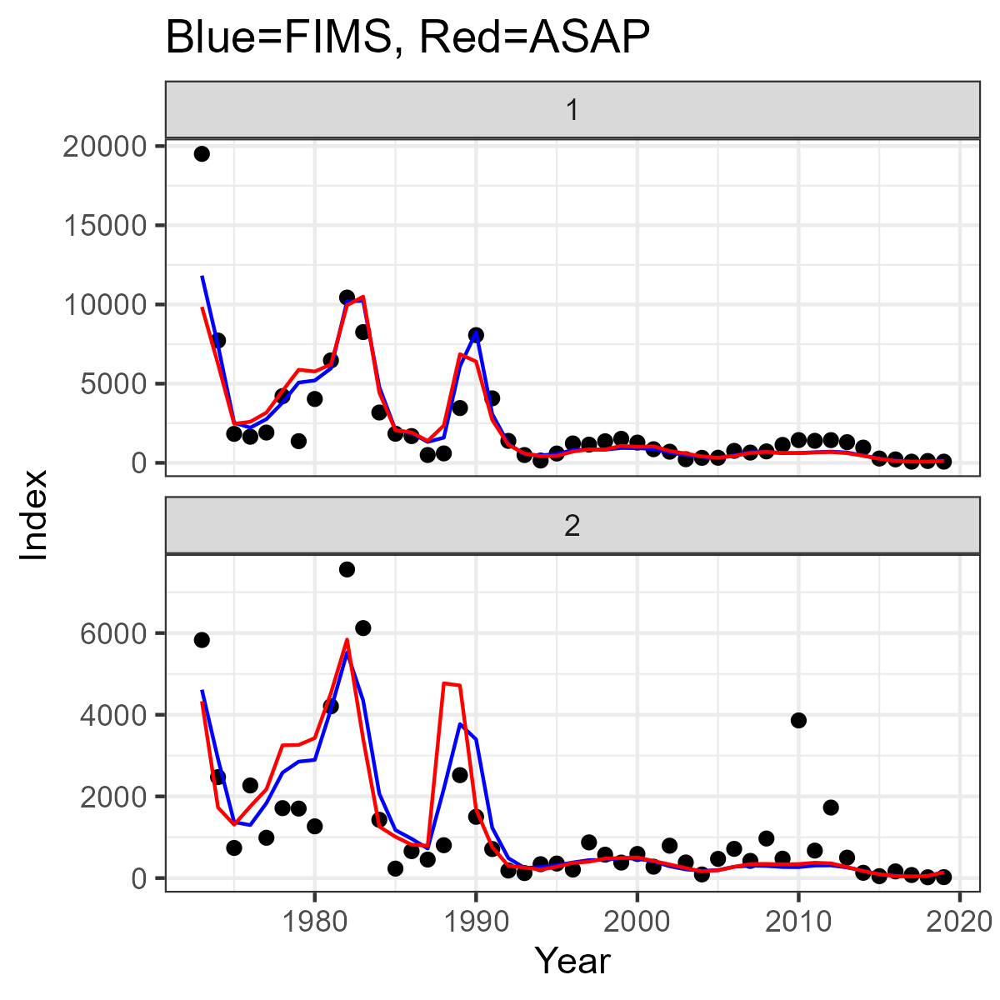
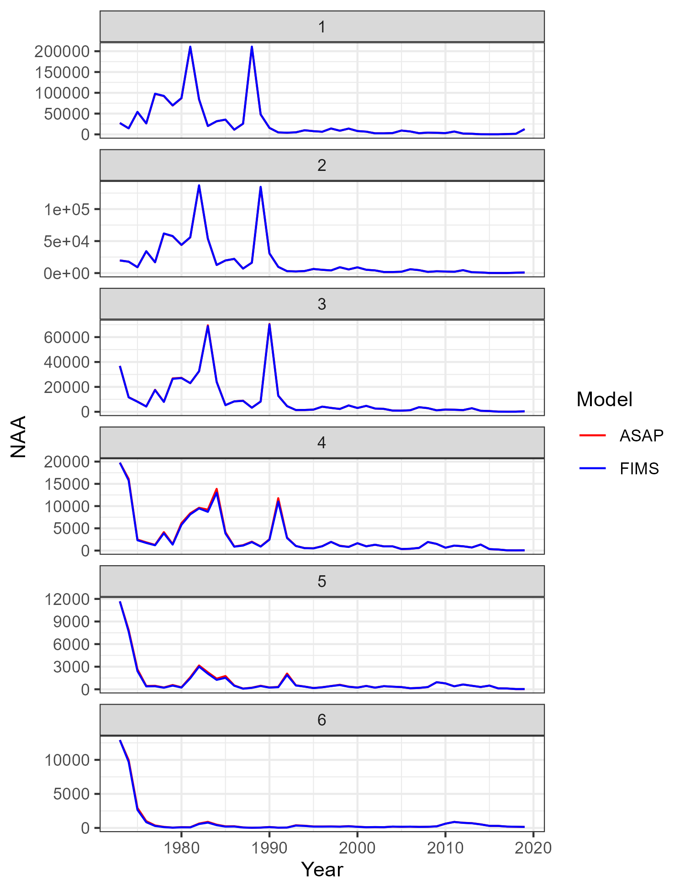
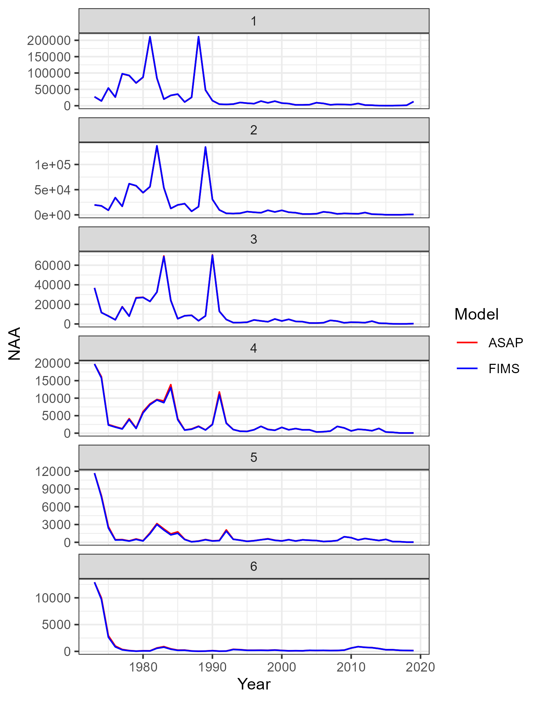
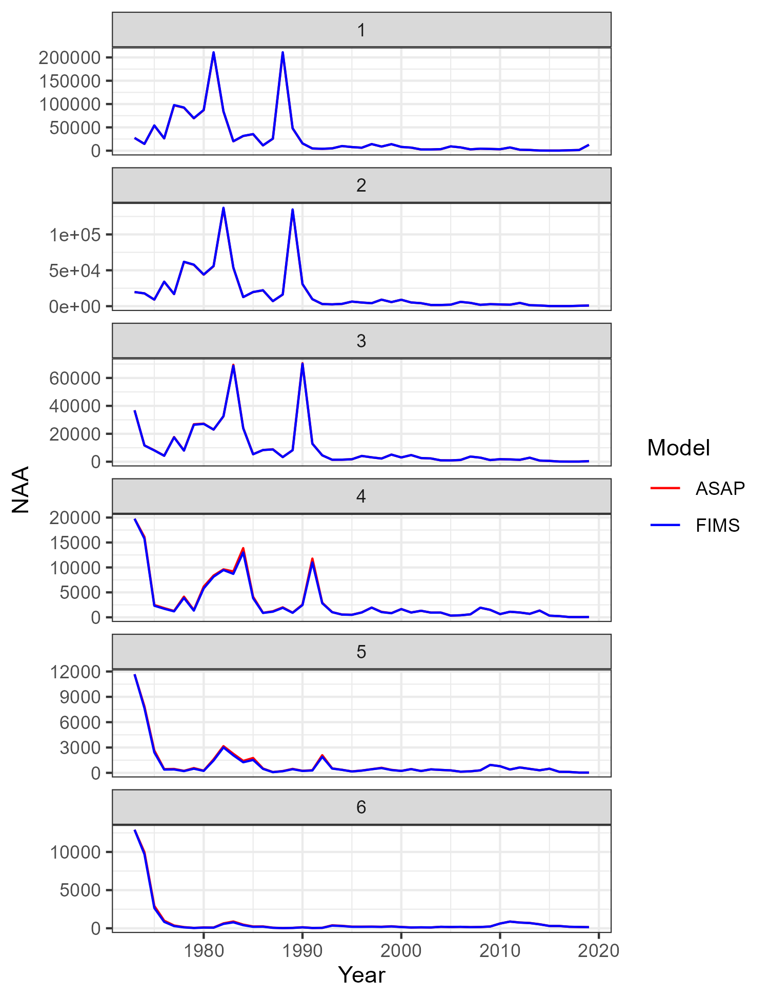

Stock name: Southern New England-Mid Atlantic Yellowtail Flounder
Region: NEFSC
Analyst: Chris Legault
Simplifications to the original assessment
End year 2021 to 2019 due to missing 2020 survey
5 indices to 2
Filled a survey missing year for one index (see below)
Varying weight at age to constant over time
Different weight at age matrices for catch, SSB, Jan-1 to same for all 3
SSB calculated in April to Jan-1
Aggregate index in numbers to weight
Fishery 2 selectivity blocks to 1
Catch and Index selectivity at age to logistic
Index timing from April to Jan-1
Varying Index CV to constant over time
Varying Catch ESS to constant over time
SR unexploited scaler SSB to recruitment
How I simplified my assessment:
To fill the missing year of survey data, I first ran the model in ASAP with the missing data treated as missing. I then filled the missing data with the expected value of the survey, both in aggregate and for catch at age in place of the missing data.
The varying weights at age, index CVs, and ESS values were replaced by the time series mean in all years.
The catch weight at age matrix was used as the weight at age for all sources.
Script that sets up and runs the model
Code
# clear memoryclear()# read the ASAP rdat filesrdat <-dget(file.path("data_files", "NEFSC_YT_SIMPLIFIED.RDAT")) # to be used in FIMS, lots of modifications from originalorig <-dget(file.path("data_files", "NEFSC_YT_ORIGINAL.RDAT")) # where started before modifications for use in FIMS# function to create equivalent of data_mile1, basic catch and survey data# need to think about how to deal with multiple fleets and indices - only use 1 of each for nowget_asap_data <-function(rdat){ res <-data.frame(type =character(),name =character(),age =integer(),datestart =character(),dateend =character(),value =double(),unit =character(),uncertainty =double()) landings <-data.frame(type ="landings",name ="fleet1",age =NA,datestart =paste0(seq(rdat$parms$styr, rdat$parms$endyr), "-01-01"),dateend =paste0(seq(rdat$parms$styr, rdat$parms$endyr), "-12-31"),value =as.numeric(rdat$catch.obs[1,]),unit ="mt",uncertainty = rdat$control.parms$catch.tot.cv[,1])# loop over all indicesfor (i in1:rdat$parms$nindices){ index <-data.frame(type ="index",name =paste0("survey", i),age =NA,datestart =paste0(seq(rdat$parms$styr, rdat$parms$endyr), "-01-01"),dateend =paste0(seq(rdat$parms$styr, rdat$parms$endyr), "-12-31"),value =as.numeric(rdat$index.obs[[i]]),unit ="",uncertainty = rdat$index.cv[[i]])if (i ==1){ allinds <- index }else{ allinds <-rbind(allinds, index) } } catchage <-data.frame(type ="age",name ="fleet1",age =rep(seq(1,rdat$parms$nages), rdat$parms$nyears),datestart =rep(paste0(seq(rdat$parms$styr, rdat$parms$endyr), "-01-01"), each=rdat$parms$nages),dateend =rep(paste0(seq(rdat$parms$styr, rdat$parms$endyr), "-12-31"), each=rdat$parms$nages),value =as.numeric(t(rdat$catch.comp.mats$catch.fleet1.ob)),unit ="",uncertainty =rep(rdat$fleet.catch.Neff.init[1,], each=rdat$parms$nages))# loop over all indicesfor (i in1:rdat$parms$nindices){ indexage <-data.frame(type ="age",name =paste0("survey", i),age =rep(seq(1,rdat$parms$nages), rdat$parms$nyears),datestart =rep(paste0(seq(rdat$parms$styr, rdat$parms$endyr), "-01-01"), each=rdat$parms$nages),dateend =rep(paste0(seq(rdat$parms$styr, rdat$parms$endyr), "-12-31"), each=rdat$parms$nages),value =as.numeric(t(rdat$index.comp.mats[[i*2-1]])),unit ="",uncertainty =rep(rdat$index.Neff.init[i,], each=rdat$parms$nages))if (i ==1){ allindsage <- indexage }else{ allindsage <-rbind(allindsage, indexage) } } res <-rbind(res, landings, allinds, catchage, allindsage)return(res)}mydat <-get_asap_data(rdat)myfimsframe <- FIMS::FIMSFrame(mydat)#str(myfimsframe)# define the dimensionsnyears <- rdat$parms$nyearsyears <-seq(rdat$parms$styr, rdat$parms$endyr)nseasons <-1# ASAP only has one seasonnages <- rdat$parms$nagesages <-1:nages # ASAP starts at age 1# set up FIMS data objectsage_frame <- FIMS::FIMSFrameAge(mydat)fishery_catch <- FIMS::m_landings(age_frame)fishery_agecomp <- FIMS::m_agecomp(age_frame, "fleet1")survey_index <-list()survey_agecomp <-list()for (i in1:rdat$parms$nindices){ survey_index[[i]] <- FIMS::m_index(age_frame, paste0("survey", i)) survey_agecomp[[i]] <- FIMS::m_agecomp(age_frame, paste0("survey", i))}# eventually change to allow multiple fishing fleets similar to multiple indices - only using 1 fishing fleet for nowfishing_fleet_index <- methods::new(Index, nyears)fishing_fleet_age_comp <- methods::new(AgeComp, nyears, nages)fishing_fleet_index$index_data <- fishery_catchfishing_fleet_age_comp$age_comp_data <- fishery_agecomp *rep(rdat$fleet.catch.Neff.init[1,], each=rdat$parms$nages)# fleet selectivity#methods::show(LogisticSelectivity)fishing_fleet_selectivity <- methods::new(LogisticSelectivity)fishing_fleet_selectivity$inflection_point$value <- rdat$sel.input.mats$fleet.sel.ini[nages+1,1] # hardwired to assume only 1 fleet and logistic selectivity usedfishing_fleet_selectivity$inflection_point$is_random_effect <-FALSEfishing_fleet_selectivity$inflection_point$estimated <-TRUEfishing_fleet_selectivity$slope$value <- rdat$sel.input.mats$fleet.sel.ini[nages+2,1] # hardwired to assume only 1 fleet and logistic selectivity usedfishing_fleet_selectivity$slope$is_random_effect <-FALSEfishing_fleet_selectivity$slope$estimated <-TRUE# create fleet objectfishing_fleet <- methods::new(Fleet)fishing_fleet$nages <- nagesfishing_fleet$nyears <- nyearsfishing_fleet$log_Fmort <-log(rep(rdat$initial.guesses$Fmult.year1.init[1], nyears)) # ASAP assumes Fmult devs = 0fishing_fleet$estimate_F <-TRUEfishing_fleet$random_F <-FALSEfishing_fleet$log_q <-log(rdat$initial.guesses$q.year1.init[1])fishing_fleet$estimate_q <-FALSEfishing_fleet$random_q <-FALSEfishing_fleet$log_obs_error <-rep(log(sqrt(log(as.numeric(mean(rdat$control.parms$catch.tot.cv[,1], na.rm=TRUE)^2) +1))), nyears)fishing_fleet$estimate_obs_error <-FALSE# Next two lines not currently used by FIMSfishing_fleet$SetAgeCompLikelihood(1)fishing_fleet$SetIndexLikelihood(1)# Set Index, AgeComp, and Selectivity using the IDs from the modules defined abovefishing_fleet$SetObservedIndexData(fishing_fleet_index$get_id()) fishing_fleet$SetObservedAgeCompData(fishing_fleet_age_comp$get_id())fishing_fleet$SetSelectivity(fishing_fleet_selectivity$get_id())# survey module now can handle multiple indicesfor (i in1:rdat$parms$nindices){ survey_fleet_index <- methods::new(Index, nyears) survey_fleet_age_comp <- methods::new(AgeComp, nyears, nages) survey_fleet_index$index_data <- survey_index[[i]] survey_fleet_age_comp$age_comp_data <- survey_agecomp[[i]] *rep(rdat$index.Neff.init[i,], each=rdat$parms$nages)# survey selectivity survey_fleet_selectivity <-new(LogisticSelectivity) survey_fleet_selectivity$inflection_point$value <- rdat$sel.input.mats$index.sel.ini[(i+1)*(nages+2+4)+nages+1,1] # hardwired for this example survey_fleet_selectivity$inflection_point$is_random_effect <-FALSE survey_fleet_selectivity$inflection_point$estimated <-TRUE survey_fleet_selectivity$inflection_point$value <- rdat$sel.input.mats$index.sel.ini[(i+1)*(nages+2+4)+nages+1,1] # hardwired for this example survey_fleet_selectivity$slope$is_random_effect <-FALSE survey_fleet_selectivity$slope$estimated <-TRUE survey_fleet <- methods::new(Fleet) survey_fleet$is_survey <-TRUE survey_fleet$nages <- nages survey_fleet$nyears <- nyears survey_fleet$estimate_F <-FALSE survey_fleet$random_F <-FALSE survey_fleet$log_q <-log(rdat$initial.guesses$q.year1.init[i]) survey_fleet$estimate_q <-TRUE survey_fleet$random_q <-FALSE# sd = sqrt(log(cv^2 + 1)), sd is log transformed survey_fleet$log_obs_error <-rep(log(sqrt(log(as.numeric(mean(rdat$index.cv[[i]], na.rm=TRUE)^2+1)))), nyears) survey_fleet$estimate_obs_error <-FALSE survey_fleet$SetAgeCompLikelihood(i) survey_fleet$SetIndexLikelihood(i) survey_fleet$SetSelectivity(survey_fleet_selectivity$get_id()) survey_fleet$SetObservedIndexData(survey_fleet_index$get_id()) survey_fleet$SetObservedAgeCompData(survey_fleet_age_comp$get_id())}# Population module# recruitmentrecruitment <- methods::new(BevertonHoltRecruitment)#methods::show(BevertonHoltRecruitment)recruitment$log_sigma_recruit$value <-log(mean(rdat$control.parms$recruit.cv)) # typically enter same value for every year in ASAPrecruitment$log_rzero$value <-log(rdat$initial.guesses$SR.inits$SR.scaler.init) # ASAP can enter either R0 or SSB0, need to make sure use R0 in input filerecruitment$log_rzero$is_random_effect <-FALSErecruitment$log_rzero$estimated <-TRUE# note: do not set steepness exactly equal to 1, use 0.99 instead in ASAP runrecruitment$logit_steep$value <--log(1.0- rdat$initial.guesses$SR.inits$SR_steepness.init) +log(rdat$initial.guesses$SR.inits$SR_steepness.init -0.2)recruitment$logit_steep$is_random_effect <-FALSErecruitment$logit_steep$estimated <-FALSErecruitment$estimate_log_devs <-TRUErecruitment$log_devs <-rep(1.0, nyears) # set to no deviations (multiplier) to start, just like ASAP# growthewaa_growth <- methods::new(EWAAgrowth)ewaa_growth$ages <- ages# NOTE: FIMS currently cannot use matrix of WAA, so have to ensure constant WAA over time in ASAP file for nowewaa_growth$weights <- rdat$WAA.mats$WAA.catch.all[1,] # NOTE: FIMS assumes SSB calculated at the start of the year, so need to adjust ASAP to do so as well for now, need to make timing of SSB calculation part of FIMS later# maturity# NOTE: for now tricking FIMS into thinking age 0 is age 1, so need to adjust A50 for maturity because FIMS calculations use ages 0-5+ instead of 1-6maturity <-new(LogisticMaturity)maturity$inflection_point$value <-1.8# hardwired for now, need to figure out a better way than thismaturity$inflection_point$is_random_effect <-FALSEmaturity$inflection_point$estimated <-FALSEmaturity$slope$value <-4# hardwired for now, need to figure out a better way than thismaturity$slope$is_random_effect <-FALSEmaturity$slope$estimated <-FALSE# populationpopulation <-new(Population)population$log_M <-log(as.numeric(t(rdat$M.age)))population$estimate_M <-FALSEpopulation$log_init_naa <-log(rdat$N.age[1,]) # log(rdat$initial.guesses$NAA.year1.init)population$estimate_init_naa <-FALSE# TRUE , NOTE: fixing at ASAP estimates to test SSB calculationspopulation$nages <- nagespopulation$ages <- agespopulation$nfleets <- rdat$parms$nfleets + rdat$parms$nindices # fleets plus surveyspopulation$nseasons <- nseasonspopulation$nyears <- nyears#population$prop_female <- 1.0 # ASAP assumptionpopulation$SetMaturity(maturity$get_id())population$SetGrowth(ewaa_growth$get_id())population$SetRecruitment(recruitment$get_id())# make FIMS modelsucess <-CreateTMBModel()parameters <-list(p =get_fixed())obj <-MakeADFun(data =list(), parameters, DLL ="FIMS", silent =TRUE)# fitting the modelopt <-nlminb(start=obj$par, objective=obj$fn, gradient=obj$gr,control =list(eval.max =8000, iter.max =800))# method = "BFGS",# control = list(maxit=1000000, reltol = 1e-15))#print(opt)#max(abs(obj$gr())) # from Cole, can use TMBhelper::fit_tmb to get val to <1e-10#opt <- TMBhelper::fit_tmb(obj, newtonsteps=3, quiet = TRUE) # don't understand why quiet flag does not work in Quarto#max(abs(obj$gr()))sdr <- TMB::sdreport(obj)sdr_fixed <-summary(sdr, "fixed")report <- obj$report()### Plottingmycols <-c("FIMS"="blue", "ASAP"="red", "ASAP_orig"="darkgreen")for (i in1:rdat$parms$nindices){ index_results <-data.frame(survey = i,year = years,observed = rdat$index.obs[[i]],FIMS = report$exp_index[[rdat$parms$nfleet+i]],ASAP = rdat$index.pred[[i]] )if (i==1){ allinds_results <- index_results }else{ allinds_results <-rbind(allinds_results, index_results) }}#print(allinds_results)comp_index <-ggplot(allinds_results, aes(x = year, y = observed)) +geom_point() +geom_line(aes(x = year, y = FIMS), color ="blue") +geom_line(aes(x = year, y = ASAP), color ="red") +facet_wrap(~survey, scales ="free_y", nrow =2) +xlab("Year") +ylab("Index") +ggtitle("Blue=FIMS, Red=ASAP") +theme_bw()#print(comp_index)catch_results <-data.frame(observed = fishing_fleet_index$index_data,FIMS = report$exp_index[[1]],ASAP =as.numeric(rdat$catch.pred[1,]))#print(catch_results)comp_catch <-ggplot(catch_results, aes(x = years, y = observed)) +geom_point() +xlab("Year") +ylab("Catch (mt)") +geom_line(aes(x = years, y = FIMS), color ="blue") +geom_line(aes(x = years, y = ASAP), color ="red") +ggtitle("Blue=FIMS, Red=ASAP") +theme_bw()#print(comp_catch)pop_results <-data.frame(Year =c(years, max(years)+1, years, years, years, years, max(years)+1, years),Metric =c(rep("SSB", 2*nyears+1), rep("F_mort", 2*nyears), rep("Recruitment", 2*nyears+1)),Model =c(rep("FIMS", nyears+1), rep("ASAP", nyears), rep(c("FIMS", "ASAP"), each=nyears), rep("FIMS", nyears+1), rep("ASAP", nyears)),Value =c(report$ssb[[1]], rdat$SSB, report$F_mort[[1]], rdat$F.report, report$recruitment[[1]], as.numeric(rdat$N.age[,1])))#print(pop_results)# ggplot(filter(pop_results, Year <=2019), aes(x=Year, y=Value, color=Model)) +# geom_line() +# facet_wrap(~Metric, ncol=1, scales = "free_y") +# theme_bw() +# scale_color_manual(values = mycols)orig_years <-seq(orig$parms$styr, orig$parms$endyr)orig_pop_results <-data.frame(Year =rep(orig_years, 3),Metric =rep(c("SSB", "F_mort", "Recruitment"), each =length(orig_years)),Model ="ASAP_orig",Value =c(orig$SSB, orig$F.report, as.numeric(orig$N.age[,1])))pop_results_3 <-rbind(pop_results, orig_pop_results)#print(pop_results_3)# ggplot(filter(pop_results_3, Year <=2019), aes(x=Year, y=Value, color=Model)) +# geom_line() +# facet_wrap(~Metric, ncol=1, scales = "free_y") +# theme_bw() +# scale_color_manual(values = mycols)comp_FRSSB3 <-ggplot(pop_results_3, aes(x=Year, y=Value, color=Model)) +geom_line() +facet_wrap(~Metric, ncol=1, scales ="free_y") +theme_bw() +scale_color_manual(values = mycols)#print(comp_FRSSB3)FIMS_naa_results <-data.frame(Year =rep(c(years, max(years)+1), each = nages),Age =rep(ages, nyears+1),Metric ="NAA",Model ="FIMS",Value = report$naa[[1]])ASAP_naa_results <-data.frame(Year =rep(years, each = nages),Age =rep(ages, nyears),Metric ="NAA",Model ="ASAP",Value =as.numeric(t(rdat$N.age)))orig_naa_results <-data.frame(Year =rep(orig_years, each = nages),Age =rep(ages, length(orig_years)),Metric ="NAA",Model ="ASAP_orig",Value =as.numeric(t(orig$N.age)))naa_results <-rbind(FIMS_naa_results, ASAP_naa_results, orig_naa_results)#print(naa_results)# ggplot(filter(naa_results, Year <= 2019), aes(x=Year, y=Value, color=Model)) +# geom_line() +# facet_wrap(~Age, ncol=1, scales = "free_y") +# ylab("NAA") +# theme_bw() +# scale_color_manual(values = mycols)comp_naa2 <-ggplot(filter(naa_results, Year <=2019, Model %in%c("ASAP", "FIMS")), aes(x=Year, y=Value, color=Model)) +geom_line() +facet_wrap(~Age, ncol=1, scales ="free_y") +ylab("NAA") +theme_bw() +scale_color_manual(values = mycols)#print(comp_naa2)# ggplot(filter(naa_results, Year == 1973, Model %in% c("ASAP", "FIMS")), aes(x=Age, y=Value, color=Model)) +# geom_line() +# ylab("NAA in Year 1") +# theme_bw() +# scale_color_manual(values = mycols)saveplots <-TRUEif(saveplots){ggsave(filename ="figures/NEFSC_YT_compare_index.png", plot = comp_index, width =4, height =4, units ="in")ggsave(filename ="figures/NEFSC_YT_compare_catch.png", plot = comp_catch, width =4, height =4, units ="in")ggsave(filename ="figures/NEFSC_YT_compare_FRSSB3.png", plot = comp_FRSSB3, width =5, height =6.5, units ="in")ggsave(filename ="figures/NEFSC_YT_compare_NAA2.png", plot = comp_naa2, width =5, height =6.5, units ="in")}
Comparison figures
 
Comparison table
The likelihood components from FIMS and ASAP for the same data are shown in the table below. Note that the ASAP file had to turn on the use likelihood constants option to enable this comparison (this option should not be used when recruitment deviations are estimated).
Component FIMS ASAP
1 Total 1569.47965 2410.844
2 Index 63.72178 1020.548
3 Age Comp 1360.01928 1390.297
4 Rec 145.73859 0.000
What was your experience using FIMS? What could we do to improve usability?
Relatively easy to use by following the vignette. Creating wrappers for data input would help so that each element did not need to be assigned directly.
 
